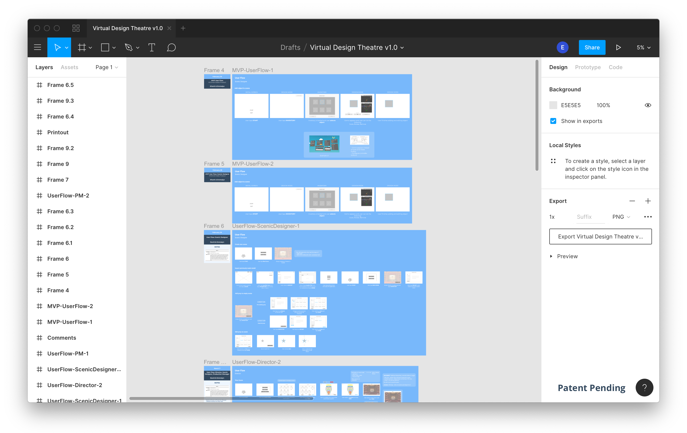

Currently, a patent-pending and my first project working independently with a client.
Due to circumstances of the project, some information such as features, wireframes of final design, and other specific details in regards to product will not be disclosed.
It was my first semester as a senior that I decided to take a course on the topic of VR and AR technologies. With one month left of the class, we were given the opportunity to work with a colleague of my professor on his working concept.
Myself and two other students met with him weekly and began prototyping the program utilizing the Unity Game Engine and Samsung Gear VR. With the semester coming to an end, he asked us if we wanted to continue. However, I wasn't interested in programming. I wanted to put the skills that I've learned from my UX courses to use and help David in delivering a new prototype that followed a user-centered approach. And thus began my journey working as a UX Designer for my first client, Zanni LLC.
MIXR (Machine Intelligence and Extended Reality) Lab at NJIT
Feb. 2019 - May 2019 (3 months - UX Designer)
Nov. 2018 - Dec. 2018 (1 month - Developer)
As someone who has no prior knowledge of how the theatre and opera industry worked, this was my first challenge. Second, given the scope of the project, there were numerous areas that we could focus on. Lastly, I had approximately 3 months to finish this project.
To begin, I needed to understand the current workflow process of how things worked at theatre houses. From my discussions with the client, this was my understanding.

Next, was understanding the problem. As can be seen, theatres like the Metropolitan Opera utilize 2D and 3D technologies in rendering models for production planning. Furthermore, miniature physical models are constructed to showcase and review working concepts. Due to this process, the creativity of the designers is limited within the 2-D and 3-D realm. Not only that, but the time allocated towards constructing these models can take months for a final decision.Our solution was to create a tool using Mixed Reality to help fix this issue.
As mentioned before, the client had many ideas that he wanted to incorporate. However, I asked him what should we prioritize for our users? Wait a sec, but who are our main users and what issues did they face?
Together, we went over the different stakeholders this project would be affected directly. There were five departments: Management, Design, Construction, and Staging. These were further broken down by specific roles. In addition to our documentation, we included those that would be affected by our system indirectly.
Now, our target users. We narrowed it down to three roles: Director, Scenic Designer, and Production Manager. If I had additional help and time, I would have conducted one-on-one interviews to construct personas that would more accurately reflect our users. In addition, it would have helped with giving this product in-progress more value than a working concept. Instead, I decided to create the personas through research online and discussing with my client about their role, goals, and frustrations. After a few iterations with this flow, I created Jonathan Graham, Dianne Robinson, and Rachel Moore.
As a director at age 37, his main role is to visualize concepts to prepare for production. At the same time he wants to ensure the quality and completeness of the scene is doable. In result, he needs to relay detailed and constructive feedback to the different teams in order to achieve the vision that he has in mind.
A 34 year-old Scenic Designer who wants to discover the best creative route of setting the scene. She wants to be able to manipulate objects easily to convey her ideas. At the same time, speed up time when designing and receiving feedback more frequently. Her main frustration, unable to use her creativity to its fullest.
Age 46 and a Production Manager that wants to deliver a stage performance that fits within the time constraints and budget. It can be frustrating when changes to the scene take longer than predicted. Even more frustrating when the designer and director don't agree with the feedback given.

After creating the personas, I continued by constructing use cases. How would the application fit Jonathan's and Rachel's current work routine?One use case reflected the Director's role and the second followed the Scenic Designer's route. I realized that the third persona, Production Manager, wasn't as unique as predicted. The duties of the PM ended up overlapping with the Director's route.
After understanding more about the day to day actions of our users, it was easier to define our goals for the MVP.
An application that would reflect the following:

Throughout the duration of the project, I wanted to make it as interactive as possible with the small-time slot I had with him. Essentially, I wanted to get a better understanding of my client and get as much feedback as possible. Casual meetings with the client took place once per week approximately taking 2hrs each session. For this case, I used Figma as a tool to storyboard how users would interact with the application.
We knew who to design the system for, but what exact tools did they need for a typical workday? What tasks did scenic designers and directors need to to achieve their goals? In addition, how can we optimize their current workflow process and keep consideration of their technical abilities? These were questions we discussed to help in figuring out the main functionalities of the program.
First I focused on one persona > gave them a task > and drew up low-fidelity wireframes that followed a step-by-step process if they were to use the application.
Example:
Rachel Moore, a Scenic Designer, wants to create a new scene and add props to the environment.
Goal 1 and 2 complete (Reduce time of design process and refine planning of stage experience before physical production), now it was question of how to solve the third goal: Effectively communicate between team members. I knew I needed to incorporate a method of users reaching the cloud through a website would be my best bet. It was how will a user use a VR application made for Gear VR and be able to access it on other devices (e.g. mobile phone, desktop, tablet).
Going through the previous user flow process, took multiple weeks of iterations. With a tight deadline, I figured looking into another research method could help. I found that user flow diagrams were a great way of accomplishing this and way more efficient (I wish I learned this before). This helped with finding holes within our current process and optimizing it even further.
The MVP of the project was the VR program. However, I had enough time to create a final sitemap of what would be needed to use the website with the product.
At the same time, I had some worries about the product since we didn’t conduct market research. If we were to launch who would be our competition? Where exactly does our product stand out? Are there any opportunities or threats that we should take in consideration? How can we be progressive with this application to avoid copying other products?
I documented a total of 12 companies and listed down the features they valued.
For every company, we sat down and visited each site and commented briefly for each one. With having an overview of our competition, we knew we were heading in the right direction. Asides from looking at companies, I also searched up articles on the topic of VR and Theatre. I brought the attention of one article post on Medium to my Client, and he was blown away! Who would have thought that one written piece, can cause a eureka moment.
At the same time of designing the wireframes, I wanted to make sure the features I was discussing with the client were viable. I only took one semester of AR and VR development, so any insight on the topic greatly helped. I would meet with the Developer online, to share the ideas in mind I used InVision Freehand to collaborate.
From understanding the user’s goals and pain-points, I was able to pinpoint the necessary functions that were needed to complete the task given. At the same time, my client was able to visually see the process in the perspective of the user.
Due to the NDA, I’m unable to reveal the features we made :(
Every week consisted of: Walking through design > Reviewing and gathering feedback > Re-design through Figma. After four weeks of going over this iterative process (Around 115 wireframes), I brought the client and developer together to see the final mapping in-person. Together we did one final walk-through. Even at this point, we discussed more ways to make it even more compact, and talked about possible creative features that could be implemented for future versions. I noticed through this method, my client was even more excited about the product we were creating.

For the VR application I used Sketch to create the wireframes. I made a total of 20 screens.
As for my last task, I created a blueprint of the designs and mapped out the features that would be integrated.
After working with David, it has been an eye-opening experience. This was my first time designing for VR technologies and touching base with the theatre industry. I learned a lot about working independently, collaborating directly with a client, and understood more about the need for UX in product development. As of now, the project is a patent in-progress and I can’t wait to see what it will hold in the future :)
What I could have done better:
These are just a few that stuck out to me: